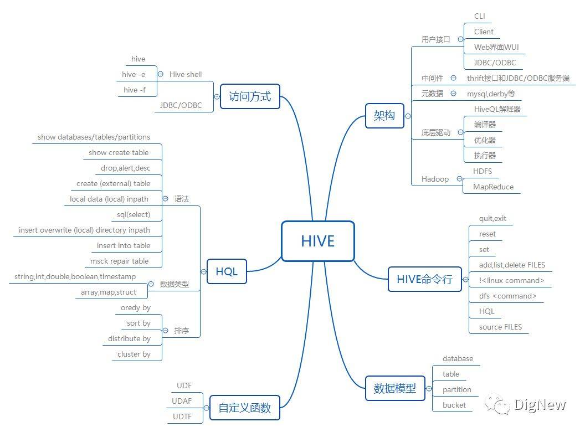
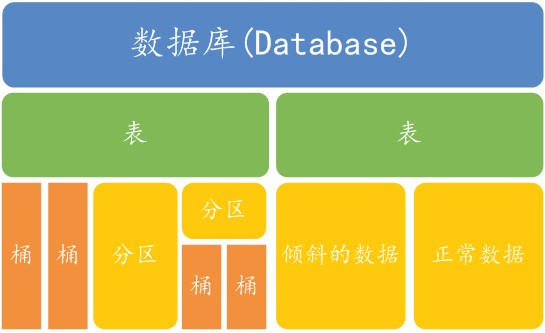

hive 功能特性
Table of Contents
Hive是基于Hadoop分布式文件系统的，它的数据存储在Hadoop分布式文件系统中。Hive本身是 没有专门的数据存储格式，也没有为数据建立索引，只需要在创建表的时候告诉Hive数据中的列分 隔符和行分隔符，Hive就可以解析数据。所以往Hive表里面导入数据只是简单的将数据移动到表所 在的目录中
hive 基础
Hive思维导图

数据模型
Table(表)，External Table(外部表)，Partition(分区)，Bucket(桶)
内部表和外部表最大的区别: 内部表DROP时候会删除HDFS上的数据;外部表DROP时候不会删除HDFS上的数据;
内部表适用场景：Hive中间表、结果表、一般不需要从外部（如本地文件、HDFS上load数据）的情况。
外部表适用场景: 源表，需要定期将外部数据映射到表中。
db：在 hdfs 中表现为${hive.metastore.warehouse.dir}目录下一个文件夹
table：在 hdfs 中表现所属 db 目录下一个文件夹
external table：与 table 类似，不过其数据存放位置可以在任意指定路径
partition：在 hdfs 中表现为 table 目录下的子目录
bucket：在 hdfs 中表现为同一个表目录下根据 hash 散列之后的多个文件

- 字段类型
基础数据类型
基础数据类型 描述 示例 TINYINT 10Y SMALLINT 10S INT 10 BIGINT 100L FLOAT 1.2345679 DOUBLE 1.2345678901234567 DECIMAL DECIMAL (3,2) for 3.14 BINARY 1011 BOOLEAN TRUE STRING ‘Books’ or “Books” CHAR ‘US’ or “US” VARCHAR ‘Books’ or “Books” DATE ‘2013-01-01’ TIMESTAMP ‘2013-01-01 12:00:01.345 复杂数据类型
复杂数据类型 描述 示例 ARRAY [‘apple’,‘orange’,‘mango’] MAP {1: “apple”,2: “orange”} STRUCT {1, “apple”} NAMED STRUCT {“apple”:“gala”,“weight kg”:1} UNION {2:[“apple”,“orange”]}
存储格式
存储格式主要是 Hive 的概念， 但是对于数据同步来讲，格式的选择会影响同步数据，类型系统的兼容性等等， 我们必须予以关注
压缩比 预计算 类型兼容性 TextFile 无 否 一般 SequenceFile 中 否 一般 Parquet 高 是 好 ORC 高 是 好 
Hive 默认的存储格式是 TextFile，TextFile 类似一个 CSV 文件， 使用不可见符号分割列，同步后的数据可读性比较好。但是因为所有数据都是按文本存储的， 对于某些类型（比如 blob/bit ）无法支持。
Parquet/ORC 都是列式存储格式，这里不多介绍。在生产环境中更倾向于选择, Parquet/ORC,节省空间的同时在Hive上的查询速度也更快, Parquet是一种支持嵌套结构的存储格式，并且使用了列式存储的方式提升查询性能
hive client 使用
测试集群16G内存，三个节点,选YouTube视频统计与社交网络作为数据集
清洗数据
数据字段都是以 \t 分割，一个字段内有多个值的统一 & 分割
视频相关字段信息
| 字段 | 说明 | 示例 |
|---|---|---|
| video ID | 视频ID | 8uvVFMrY0Ec |
| uploader | 上传者 | wowultimate |
| age | 从视频上传日期算 | 819 |
| category | 视频分类 | Gadgets & Games |
| length | 视频长度 | 38 |
| views | 观看数 | 18932 |
| rate | 一个浮点数的视频速率 | 0 |
| ratings | 评分 | 0 |
| comments | 评论数 | 30 |
| related IDs | 相关视频ID | RN3d0izmJMg & bbh54CIGCj8 & dEI9jZyC9h4 |
用户相关信息
| 字段 | 描述 | 示例 |
|---|---|---|
| uploader | 上传者 | fiveawesomegirls |
| videos | 上传视频数 | 1893 |
| friends | 朋友数 | 190 |
建表导入数据
首先测试数据文件上传hdfs /hadoop_data/ 下
创建数据库
create database if not exists hdb;
drop database hdb cascade;
视频信息创建表
- 文件格式为textfile
内部表
create table i_text( videoId string, uploader string, age int, category array<string>, length int, views int, rate float, ratings int, comments int, relatedId array<string> ) row format delimited fields terminated by "\t" collection items terminated by "&" stored as textfile;load data inpath "/hadoop_data/clean.txt" into table i_text;
此时你会发现
/hadoop_data/clean.txt源文件已经被copy到/user/hive/warehouse/hdb.db/i_text,内部表删除后，此文件也会被删除外部表
external table 指定hdfs任意位置存储
create external table o_text( videoId string, uploader string, age int, category array<string>, length int, views int, rate float, ratings int, comments int, relatedId array<string> ) row format delimited fields terminated by "\t" collection items terminated by "&" stored as textfile;注意: sorted as 和 locatioon 的顺序
load data local inpath "/home/manue1/clean.txt" into table o_text
load data inpath "/hadoop_data/clean.txt" into table o_text
此时你会发现
/hadoop_data/clean.txt源文件已经被copy到/user/hive/warehouse/hdb.db/o_text,外部表删除后，此文件还在
文件格式为orc
对update上传者字段进行桶分区
create table b_orc( videoId string, uploader string, age int, category array<string>, length int, views int, rate float, ratings int, comments int, relatedId array<string> ) clustered by (uploader) into 8 buckets row format delimited fields terminated by "\t" collection items terminated by "&" stored as textfile;由于无法将textfile格式的数据导入到orc格式的表格，所以数据需要从i_text导入到b_orc
insert into table b_orc select * from i_text;
用户信息创建表
textfile
create table user_text(uploader string,videos int,friends int) row format delimited fields terminated by "\t" stored as textfile;
load data inpath "/hadoop_data/user.txt" into table user_text;
orc
create table user_orc(uploader string,videos int,friends int) clustered by (uploader) into 24 buckets row format delimited fields terminated by "\t" stored as orc;
insert into table user_orc select * from user_text;
python UDF实现
在内置函数无法满足当前业务需求的时候,Hive允许用户自定义一些函数，用于扩展 HiveQL 的功能，这类函数叫做 UDF（用户自定义函数）
编写 mp.py 用来处理复杂逻辑
#!/usr/bin/env python
#encoding=utf-8
import sys
if __name__=="__main__":
# 解析每一行数据
for line in sys.stdin:
# MAP 处理操作
print 'result'
hive client 调用UDF
hive> add file /Users/life/Desktop/m.py; hive> select user_id, food_type, count(*) from ( select transform (user_id, food_type, datetime) using 'python m.py' as (user_id, food_type) from user_foods where dt='2014-06-07' ) tmp group by user_id, food_type;
hive server使用
python的pyhive模块 通过thrift方式连接hive,实现查询和取回结果的操作
DB-API
from pyhive import presto # or import hive
cursor = presto.connect('localhost').cursor()
cursor.execute('SELECT * FROM my_awesome_data LIMIT 10')
print cursor.fetchone()
print cursor.fetchall()
DB-API (asynchronous)
from pyhive import hive
from TCLIService.ttypes import TOperationState
cursor = hive.connect('localhost').cursor()
cursor.execute('SELECT * FROM my_awesome_data LIMIT 10', async=True)
status = cursor.poll().operationState
while status in (TOperationState.INITIALIZED_STATE, TOperationState.RUNNING_STATE):
logs = cursor.fetch_logs()
for message in logs:
print message
# If needed, an asynchronous query can be cancelled at any time with:
# cursor.cancel()
status = cursor.poll().operationState
print cursor.fetchall()